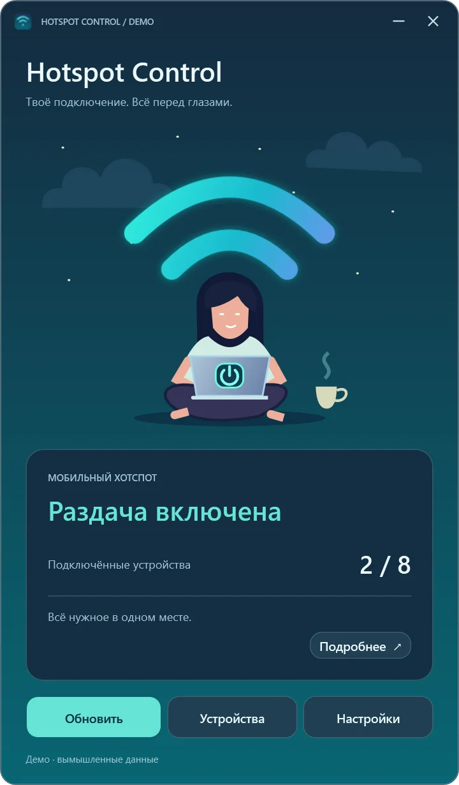

НОВОЕВышла версия 0.3.0 Что нового →
Hotspot Control
Управляет мобильной точкой доступа Windows, показывает устройства и настройки сети.
Выпуск · 0.3.0 Windows 11 24H2+ · x64Перед запускомСовместимый Wi-Fi-адаптер; политики Windows или организации могут ограничивать операции. .NET входит в пакет.


Демонстрационный интерфейс с искусственными данными. Открыть изображение целиком.
Что внутри
Установка, функции, данные, проверка.
Установка
Проверить архив, распаковать, запустить.
PS> Get-FileHash .\HotspotControl-0.3.0-win-x64.zip -Algorithm SHA256
PS> Get-Content .\HotspotControl-0.3.0-win-x64.zip.sha256
Оба значения должны совпадать.
PS> Expand-Archive .\HotspotControl-0.3.0-win-x64.zip -DestinationPath .\HotspotControl
PS> .\HotspotControl\HotspotControl-0.3.0-win-x64\HotspotControl.App.exe
Работает локально
Без облака и телеметрии. Настройки лежат в %LOCALAPPDATA%\HotspotControl; пароли приложение не хранит.
Локально · офлайнФункции
Статус и подключённые устройстваВключение и выключение точки доступаИмя сети и парольДиапазон частотАвтозапускЗначок в трееRU · DE · EN
Проверено
- Сборка на Windows через GitHub Actions
- Проверка документации и ссылок в CI
- Контрольная сумма SHA-256 для загрузки
- Номер версии и журнал изменений
- Интерфейс на немецком, русском и английском
Как это работает
- Проверить Wi-Fi адаптер
- Настроить точку доступа
- Посмотреть устройства
Первые шаги
Проверьте SHA-256, распакуйте ZIP полностью и откройте HotspotControl.App.exe. Отдельная установка .NET не нужна.